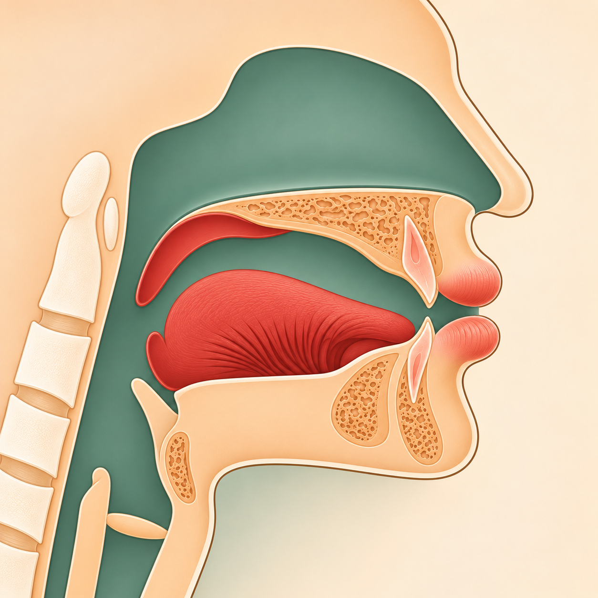
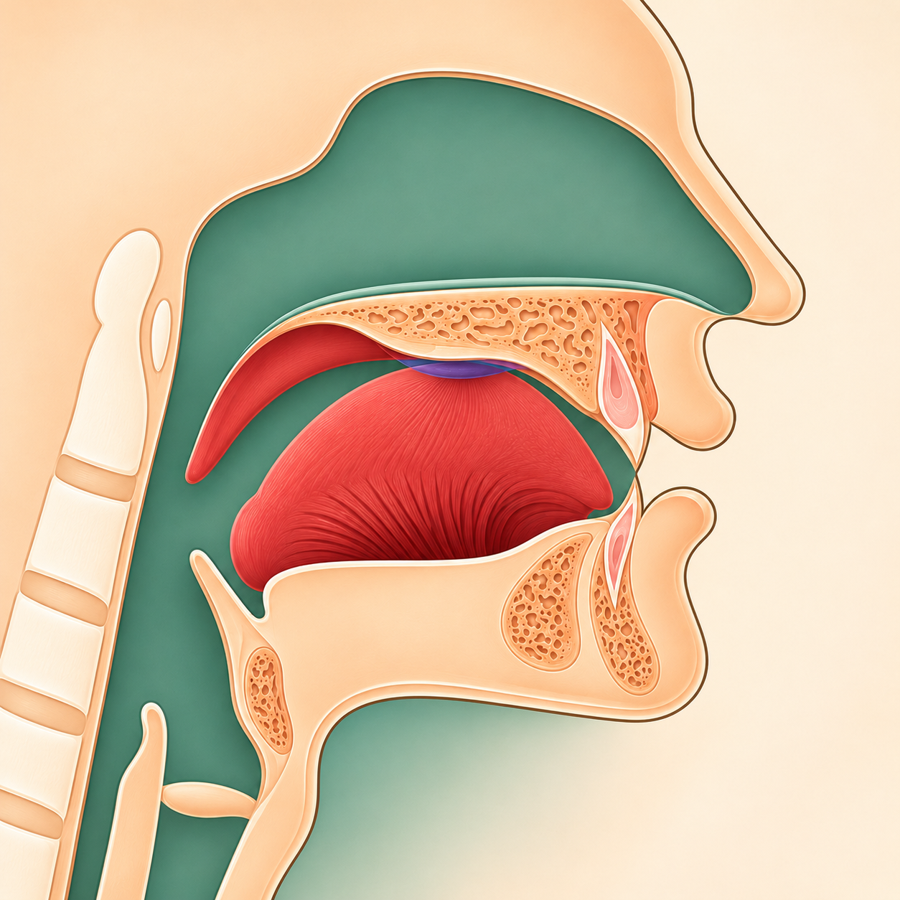

Коръән әлифбасын укыту методикасы
Лин сыйфаты
Таныш Вау һәм Йә хәрефләрендә Лин кайчан барлыкка килүен күрәбез һәм ишетәбез.
01 · Шартын табабыз
Лин — йомшак күчеш
Лин — Вау һәм Йә хәрефләренә хас шартлы парсыз сыйфат. Хәреф сәкенле, ә аның алдындагы хәреф фәтхәле булганда күренә.
◌َАлдагы хәрефтә фәтхә
+وْ / يْВау яки Йә сәкенле
→Линйомшак күчеш
Мәдд табигый белән бутамыйбыз
Мәдд табигый◌ُ + و ◌ِ + ي
Вау алдыннан даммә, Йә алдыннан кәсрә килә. Бу — озын сузык.
Лин сыйфаты◌َ + وْ ◌َ + يْ
Вау яки Йә сәкенле; алар алдыннан фәтхә килә. Бу — Лин очрагы.
02 · Рәсемдә күрәбез
Мәхраҗны искә төшерәбез
Ике хәрефнең мәхраҗы төрле. Лин шарты исә икесендә дә бер үк: алдагы фәтхә һәм хәреф өстендәге сәкен.

1Иреннәр түгәрәкләнә, ләкин тулысынча ябылмый. Линда сәкенле Вауны алдагы фәтхәле хәрефкә йомшак кушабыз.

1Телнең уртасы каты аңкауга якынлаша. Линда сәкенле Йәне алдагы фәтхәле хәрефкә йомшак кушабыз.
03 · Укып карыйбыз
Без укыйбыз — укучы кабатлый
Ике үрнәктә дә башта фәтхәне, аннары сәкенне күрсәтәбез. Хәрефләрне аерым әйтеп, аннары кушып укыйбыз.
أَوْХәмзә — фәтхә; Вау — сәкен. Авазларны йомшак кушабыз.
أَيْХәмзә — фәтхә; Йә — сәкен. Авазларны йомшак кушабыз.
Бу ике буын — уку үрнәге. Сүзләрне һәм туктаганда сузу кагыйдәләрен соңрак өйрәнәбез.
Укытучыга: Укучыдан ике билгене күрсәтүен сорагыз: алдагы хәрефтә фәтхә, Вау яки Йә өстендә сәкен. Аннары ике авазны каты өзмичә кушып укысын.
Истә тотабызЛин һәр Вау яки Йәдә түгел: фәтхә + сәкен шарты кирәк. Вау һәм Йәнең мәдд очрагы белән чагыштырып тыңлыйбыз.
Чыганак: «Тәҗвид 1», Әл-Лин турындагы аңлатма; Вау һәм Йә рәсемнәре үз дәресләреннән алынды.